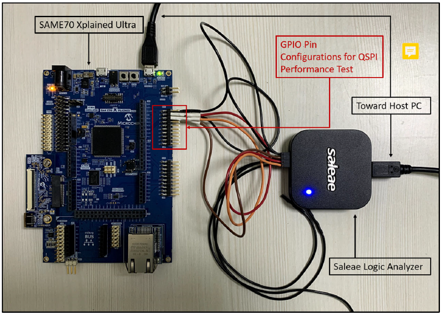
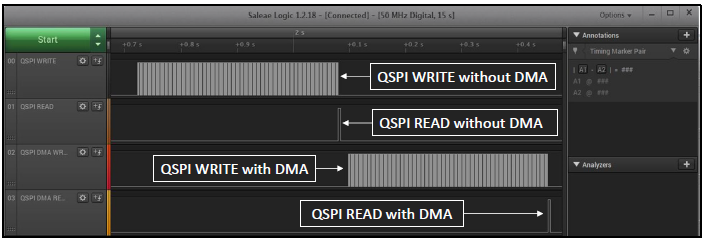

XDMAC with QSPI Application on SAM E70 Xplained Ultra Evaluation Kit
Description:
This application demonstrates the usage of Extended Direct Memory Access Controller (XDMAC) with QSPI on Cortex-M7 based MCU (SAM E70).
The application writes and reads 80KB data into the External Serial Flash memory using the QSPI, with and without using XDMAC.
Modules/Technology Used:
- Peripheral Modules
- EFC
- MPU
- QSPI
- XDMAC
- SYSTICK
Hardware Used:
This project has been verified to work with the following versions of software tools:
Setup:
- Connect the micro USB to the Host computer
- Connect the Saleae Logic Analyzer and establish a connection with the Host PC
- Configure the four channels to measure the QSPI throughput as follows
- Channel 0 is PA19, which is configured to Set and Clear the pin before and after the QSPI Write without DMA
- Channel 1 is PB2, which is configured to Set and Clear the pin before and after the QSPI Read without DMA
- Channel 2 is PC31, which is configured to Set and Clear the pin before and after the QSPI Write with DMA
- Channel 3 is PB3, which is configured to Set and Clear the pin before and after the QSPI Read with DMA
- 
Programming binary/hex file:
- If you are not interested in installing development tools. The pre-built binary/hex file can be programmed to the target
Steps to program the hex file using MPLAB X IPE
- Open MPLAB X IPE
- Select Device has "ATSAME70Q21B"
- Power the SAM E70 Xplained Ultra Evaluation Kit from a Host PC through a Type-A male to Micro-B USB cable connected to Micro-B port
- Once Power cable is connected, "EDBG" hardware tool is identified as a programmer
- Browse to hex file (qspi_xdmac_read_write_hex_file.hex)
- Click on program button. The device gets programmed in sometime
- Follow the steps in "Running the Demo" section below
Programming/Debugging Application Project:
- Open the project (qspi_xdmac_read_write_hex_file\firmware\sam_e70_xult.X) in MPLAB X IDE
- Ensure "EDBG" is selected as hardware tool to program/debug the application
- Build the code and program the device by clicking on the "make and program" button in MPLAB X IDE tool bar
- Follow the steps in "Running the Demo" section below
Running the Demo:
- Start capturing samples using the Logic Analyzer Software
- Reset the hardware to start the application run from the beginning
- Stop capturing the sample in the Logic Analyzer Software
- Verify the the above mentioned four GPIO Pin waveforms and timestamps to see the QSPI performance with and without using the XDMAC for the following cases
- Write 80KB of data to external serial Flash without using the DMA
- Read 80KB of data from the external serial Flash without using the DMA
- Write 80KB of data to external serial Flash using the DMA
- Read 80KB of data from the external serial Flash using the DMA
- 
Revision:
- v1.0 released demo application